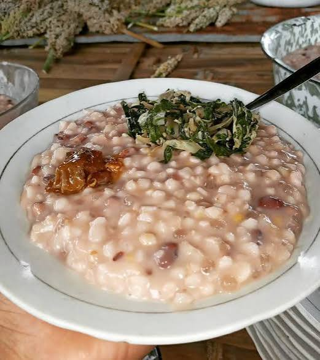

Makanan
Se'i Sapi
Daging yang diolah dengan teknik pengasapan dan dikenal sebagai salah satu kuliner populer dari Nusa Tenggara Timur.
JELAJAHI CITA RASA NUSA TENGGARA TIMUR
Temukan cerita makanan khas, galeri, audio, dan informasi lokasi kuliner serta UMKM di Kota Kupang.

TENTANG KULINER KUPANG
Kuliner adalah bagian dari cerita, kebiasaan, dan kehidupan masyarakat. Website ini menjadi katalog digital untuk mengenal makanan khas Nusa Tenggara Timur serta membantu pengunjung mencari informasi kuliner lokal.
Catatan: deskripsi pada website ini merupakan pengenalan umum. Informasi pemilik usaha, harga, jam buka, dan alamat perlu diverifikasi langsung sebelum dipublikasikan.
KATALOG PILIHAN
Pilih kartu untuk membaca informasi dan membuka tautan terkait.
Daging yang diolah dengan teknik pengasapan dan dikenal sebagai salah satu kuliner populer dari Nusa Tenggara Timur.

Hidangan berbahan dasar jagung yang dimasak bersama kacang-kacangan. Resep dapat berbeda menurut keluarga dan daerah.

Sambal segar yang sering menjadi pelengkap hidangan. Bahan dan tingkat kepedasannya dapat bervariasi.

Hidangan rumahan yang dapat berisi jagung, kacang-kacangan, dan sayuran sesuai kebiasaan setempat.
CERITA DALAM GAMBAR
berbagai foto kuliner


DENGARKAN INFORMASI
Tekan tombol untuk mendengarkan pengenalan singkat melalui fitur suara pada browser. Suara ini dibuat dengan text-to-speech, bukan rekaman penutur bahasa daerah.
Fitur suara membutuhkan browser yang mendukung text-to-speech.
Selamat datang di Kuliner Kupang. Melalui website ini, kamu dapat mengenal beragam kuliner dari Nusa Tenggara Timur, melihat galeri, dan mencari informasi lokasi usaha kuliner. Pastikan informasi usaha diperiksa sebelum berkunjung.
TEMUKAN DI SEKITARMU
Buka pencarian peta untuk menemukan warung dan UMKM kuliner di Kota Kupang.
Jelajahi tempat makan dan kuliner yang terdaftar di area Kota Kupang.
Cari di Google Maps ↗Temukan usaha kuliner lokal dan periksa jam buka serta alamat sebelum datang.
Cari UMKM ↗Peta akan membuka situs Google Maps. Website contoh ini belum menyimpan lokasi UMKM secara langsung; hasil pencarian dapat berubah sesuai data peta.
JANGAN TERSesat
Gunakan daftar ini untuk berpindah ke bagian mana pun tanpa harus mengikuti urutan tertentu.
TENTANG PROYEK
Kuliner Kupang merupakan contoh proyek Mini OBE tentang arsitektur hypermedia interaktif. Tautan menghubungkan halaman profil, katalog, galeri, audio, dan lokasi.
Pengembangan selanjutnya dapat mencakup OCR untuk membaca menu dari foto, penerjemahan berbantuan AI, dan text-to-speech. Hasil AI perlu diperiksa manusia agar informasi tetap akurat.
Dibuat untuk keperluan pembelajaran. Data usaha, foto, harga, dan alamat harus diperiksa serta dilengkapi oleh pengelola.
Laporan perancangan website multimedia